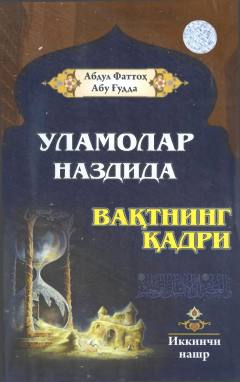

UNUlamolarning vaqtga bo'lgan munosabati va uni qadrlash sirlari bayon etilgan asar.
Mazkur kitobda o'tgan ulamolarning vaqtlarini qanday qadrlagani va undan unumli foydalangani hayotiy misollar asosida bayon qilingan. Asar o'quvchini vaqtni tejashga, uni ilm va ezgu amallarga sarflashga targ'ib qiladi.